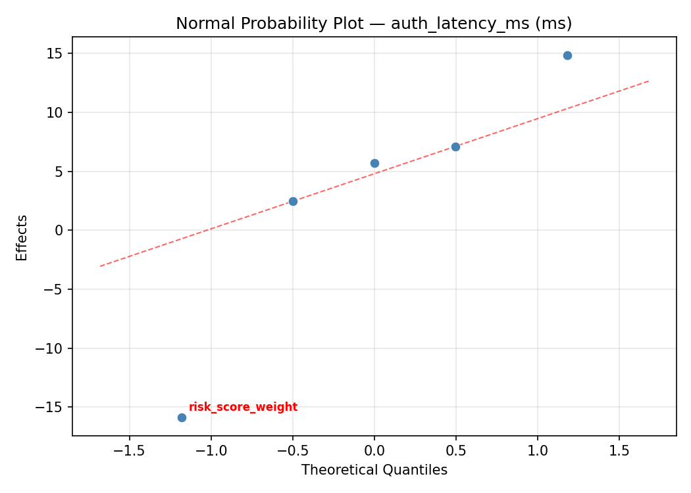
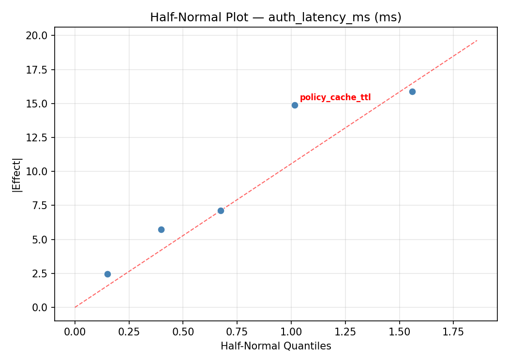
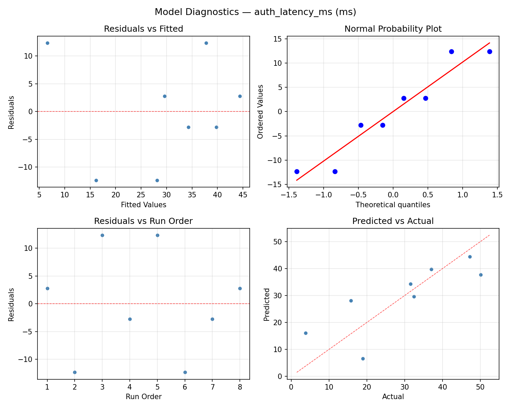
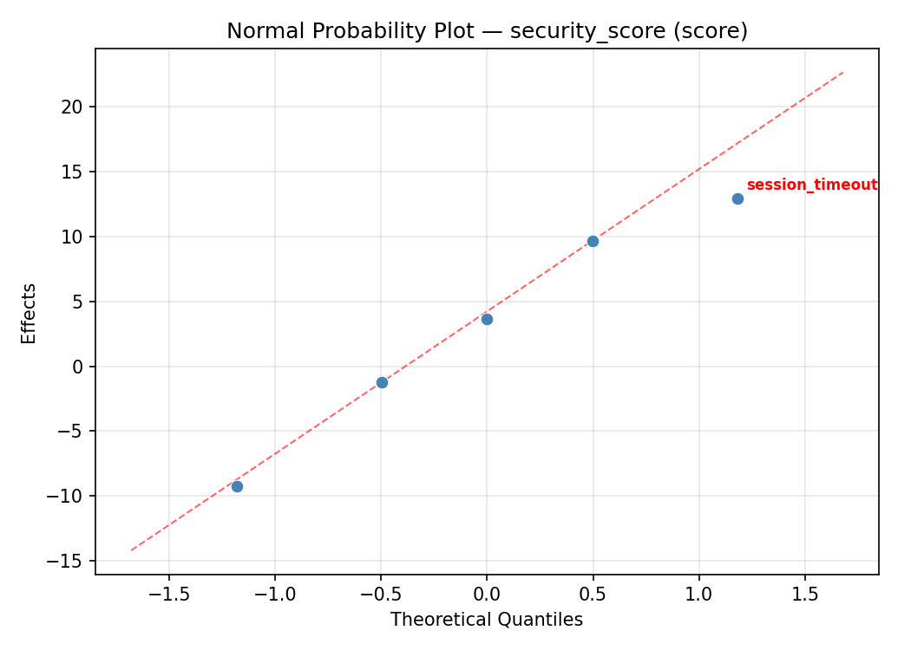
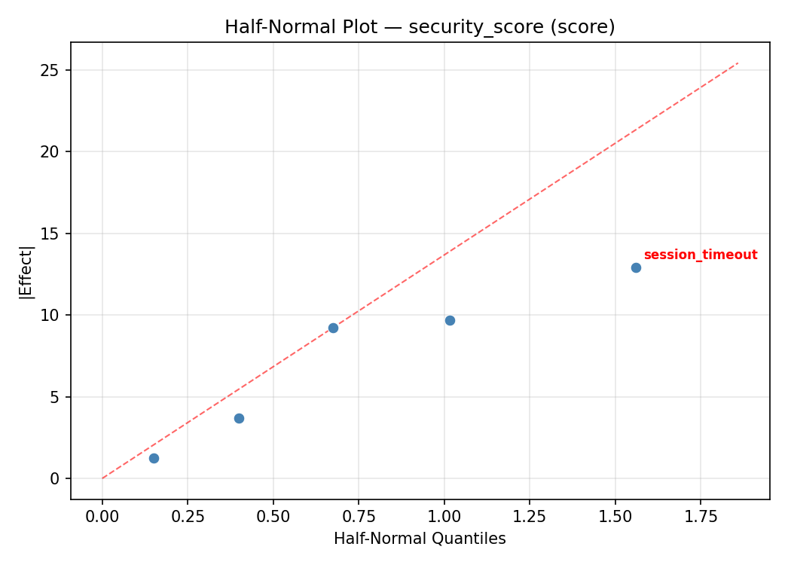
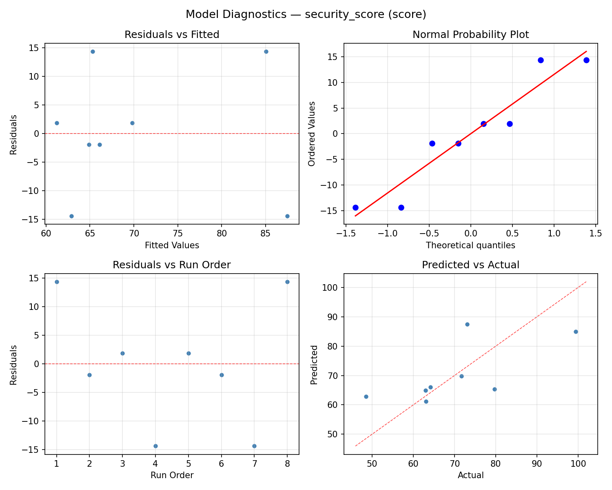

Summary
This experiment investigates zero trust policy evaluation. Fractional factorial of 5 zero trust parameters for auth latency and security score.
The design varies 5 factors: policy cache ttl (sec), ranging from 10 to 300, context attributes (count), ranging from 3 to 12, risk score weight (weight), ranging from 0.1 to 0.9, session timeout (sec), ranging from 300 to 3600, and mfa frequency (hours), ranging from 1 to 24. The goal is to optimize 2 responses: auth latency ms (ms) (minimize) and security score (score) (maximize). Fixed conditions held constant across all runs include identity provider = okta, policy engine = opa.
A fractional factorial design reduces the number of runs from 32 to 8 by deliberately confounding higher-order interactions. This is ideal for screening — identifying which of the 5 factors matter most before investing in a full study.
Key Findings
For auth latency ms, the most influential factors were session timeout (26.8%), risk score weight (24.0%), policy cache ttl (22.2%). The best observed value was 3.8 (at policy cache ttl = 10, context attributes = 3, risk score weight = 0.9).
For security score, the most influential factors were policy cache ttl (46.1%), risk score weight (35.5%), session timeout (11.4%). The best observed value was 99.4 (at policy cache ttl = 300, context attributes = 3, risk score weight = 0.9).
Recommended Next Steps
- Follow up with a response surface design (CCD or Box-Behnken) on the top 3–4 factors to model curvature and find the true optimum.
- Consider whether any fixed factors should be varied in a future study.
- The screening results can guide factor reduction — drop factors contributing less than 5% and re-run with a smaller, more focused design.
Experimental Setup
Factors
| Factor | Low | High | Unit |
|---|
policy_cache_ttl | 10 | 300 | sec |
context_attributes | 3 | 12 | count |
risk_score_weight | 0.1 | 0.9 | weight |
session_timeout | 300 | 3600 | sec |
mfa_frequency | 1 | 24 | hours |
Fixed: identity_provider = okta, policy_engine = opa
Responses
| Response | Direction | Unit |
|---|
auth_latency_ms | ↓ minimize | ms |
security_score | ↑ maximize | score |
Configuration
{
"metadata": {
"name": "Zero Trust Policy Evaluation",
"description": "Fractional factorial of 5 zero trust parameters for auth latency and security score"
},
"factors": [
{
"name": "policy_cache_ttl",
"levels": [
"10",
"300"
],
"type": "continuous",
"unit": "sec"
},
{
"name": "context_attributes",
"levels": [
"3",
"12"
],
"type": "continuous",
"unit": "count"
},
{
"name": "risk_score_weight",
"levels": [
"0.1",
"0.9"
],
"type": "continuous",
"unit": "weight"
},
{
"name": "session_timeout",
"levels": [
"300",
"3600"
],
"type": "continuous",
"unit": "sec"
},
{
"name": "mfa_frequency",
"levels": [
"1",
"24"
],
"type": "continuous",
"unit": "hours"
}
],
"fixed_factors": {
"identity_provider": "okta",
"policy_engine": "opa"
},
"responses": [
{
"name": "auth_latency_ms",
"optimize": "minimize",
"unit": "ms"
},
{
"name": "security_score",
"optimize": "maximize",
"unit": "score"
}
],
"settings": {
"operation": "fractional_factorial",
"test_script": "use_cases/61_zero_trust_policy_eval/sim.sh"
}
}
Experimental Matrix
The Fractional Factorial Design produces 8 runs. Each row is one experiment with specific factor settings.
| Run | policy_cache_ttl | context_attributes | risk_score_weight | session_timeout | mfa_frequency |
|---|
| 1 | 10 | 12 | 0.9 | 300 | 1 |
| 2 | 300 | 3 | 0.1 | 300 | 1 |
| 3 | 300 | 12 | 0.1 | 3600 | 1 |
| 4 | 300 | 12 | 0.9 | 3600 | 24 |
| 5 | 10 | 12 | 0.1 | 300 | 24 |
| 6 | 300 | 3 | 0.9 | 300 | 24 |
| 7 | 10 | 3 | 0.1 | 3600 | 24 |
| 8 | 10 | 3 | 0.9 | 3600 | 1 |
Step-by-Step Workflow
1
Preview the design
$ python doe.py info --config use_cases/61_zero_trust_policy_eval/config.json
2
Generate the runner script
$ python doe.py generate --config use_cases/61_zero_trust_policy_eval/config.json \
--output use_cases/61_zero_trust_policy_eval/results/run.sh --seed 42
3
Execute the experiments
$ bash use_cases/61_zero_trust_policy_eval/results/run.sh
4
Analyze results
$ python doe.py analyze --config use_cases/61_zero_trust_policy_eval/config.json
5
Get optimization recommendations
$ python doe.py optimize --config use_cases/61_zero_trust_policy_eval/config.json
6
Multi-objective optimization
With 2 competing responses, use --multi to find the best compromise via Derringer–Suich desirability.
$ python doe.py optimize --config use_cases/61_zero_trust_policy_eval/config.json --multi
7
Generate the HTML report
$ python doe.py report --config use_cases/61_zero_trust_policy_eval/config.json \
--output use_cases/61_zero_trust_policy_eval/results/report.html
Features Exercised
| Feature | Value |
|---|
| Design type | fractional_factorial |
| Factor types | continuous (all 5) |
| Arg style | double-dash |
| Responses | 2 (auth_latency_ms ↓, security_score ↑) |
| Total runs | 8 |
Analysis Results
Generated from actual experiment runs using the DOE Helper Tool.
Response: auth_latency_ms
Top factors: session_timeout (26.8%), risk_score_weight (24.0%), policy_cache_ttl (22.2%).
ANOVA
| Source | DF | SS | MS | F | p-value |
|---|
| Source | DF | SS | MS | F | p-value |
| policy_cache_ttl | 1 | 368.5612 | 368.5612 | 1.260 | 0.3127 |
| context_attributes | 1 | 86.4612 | 86.4612 | 0.296 | 0.6100 |
| risk_score_weight | 1 | 430.7112 | 430.7112 | 1.472 | 0.2792 |
| session_timeout | 1 | 533.0112 | 533.0112 | 1.822 | 0.2350 |
| mfa_frequency | 1 | 195.0312 | 195.0312 | 0.667 | 0.4513 |
| policy_cache_ttl*context_attributes | 1 | 533.0113 | 533.0113 | 1.822 | 0.2350 |
| policy_cache_ttl*risk_score_weight | 1 | 195.0313 | 195.0313 | 0.667 | 0.4513 |
| policy_cache_ttl*session_timeout | 1 | 86.4613 | 86.4613 | 0.296 | 0.6100 |
| policy_cache_ttl*mfa_frequency | 1 | 430.7113 | 430.7113 | 1.472 | 0.2792 |
| context_attributes*risk_score_weight | 1 | 5.9513 | 5.9513 | 0.020 | 0.8922 |
| context_attributes*session_timeout | 1 | 368.5613 | 368.5613 | 1.260 | 0.3127 |
| context_attributes*mfa_frequency | 1 | 147.0613 | 147.0613 | 0.503 | 0.5100 |
| risk_score_weight*session_timeout | 1 | 147.0612 | 147.0612 | 0.503 | 0.5100 |
| risk_score_weight*mfa_frequency | 1 | 368.5613 | 368.5613 | 1.260 | 0.3127 |
| session_timeout*mfa_frequency | 1 | 5.9512 | 5.9512 | 0.020 | 0.8922 |
| Error | (Lenth | PSE) | 5 | 1462.7344 | 292.5469 |
| Total | 7 | 1766.7887 | 252.3984 | | |
Pareto Chart

Main Effects Plot

Normal Probability Plot of Effects

Half-Normal Plot of Effects

Model Diagnostics

Response: security_score
Top factors: policy_cache_ttl (46.1%), risk_score_weight (35.5%), session_timeout (11.4%).
ANOVA
| Source | DF | SS | MS | F | p-value |
|---|
| Source | DF | SS | MS | F | p-value |
| policy_cache_ttl | 1 | 566.1613 | 566.1613 | 17.858 | 0.0083 |
| context_attributes | 1 | 7.4112 | 7.4112 | 0.234 | 0.6492 |
| risk_score_weight | 1 | 336.7013 | 336.7013 | 10.620 | 0.0225 |
| session_timeout | 1 | 34.8612 | 34.8612 | 1.100 | 0.3424 |
| mfa_frequency | 1 | 0.7812 | 0.7812 | 0.025 | 0.8814 |
| policy_cache_ttl*context_attributes | 1 | 34.8613 | 34.8613 | 1.100 | 0.3424 |
| policy_cache_ttl*risk_score_weight | 1 | 0.7813 | 0.7813 | 0.025 | 0.8814 |
| policy_cache_ttl*session_timeout | 1 | 7.4113 | 7.4113 | 0.234 | 0.6492 |
| policy_cache_ttl*mfa_frequency | 1 | 336.7013 | 336.7013 | 10.620 | 0.0225 |
| context_attributes*risk_score_weight | 1 | 572.9112 | 572.9112 | 18.070 | 0.0081 |
| context_attributes*session_timeout | 1 | 566.1613 | 566.1613 | 17.858 | 0.0083 |
| context_attributes*mfa_frequency | 1 | 43.7113 | 43.7113 | 1.379 | 0.2932 |
| risk_score_weight*session_timeout | 1 | 43.7113 | 43.7113 | 1.379 | 0.2932 |
| risk_score_weight*mfa_frequency | 1 | 566.1613 | 566.1613 | 17.858 | 0.0083 |
| session_timeout*mfa_frequency | 1 | 572.9113 | 572.9113 | 18.070 | 0.0081 |
| Error | (Lenth | PSE) | 5 | 158.5219 | 31.7044 |
| Total | 7 | 1562.5388 | 223.2198 | | |
Pareto Chart

Main Effects Plot

Normal Probability Plot of Effects

Half-Normal Plot of Effects

Model Diagnostics

Response Surface Plots
3D surfaces fitted with quadratic RSM. Red dots are observed data points.
auth latency ms context attributes vs mfa frequency

auth latency ms context attributes vs risk score weight

auth latency ms context attributes vs session timeout

auth latency ms policy cache ttl vs context attributes

auth latency ms policy cache ttl vs mfa frequency

auth latency ms policy cache ttl vs risk score weight

auth latency ms policy cache ttl vs session timeout

auth latency ms risk score weight vs mfa frequency

auth latency ms risk score weight vs session timeout

auth latency ms session timeout vs mfa frequency

security score context attributes vs mfa frequency

security score context attributes vs risk score weight

security score context attributes vs session timeout

security score policy cache ttl vs context attributes

security score policy cache ttl vs mfa frequency

security score policy cache ttl vs risk score weight

security score policy cache ttl vs session timeout

security score risk score weight vs mfa frequency

security score risk score weight vs session timeout

security score session timeout vs mfa frequency

Multi-Objective Optimization
When responses compete, Derringer–Suich desirability finds the best compromise.
Each response is scaled to a 0–1 desirability, then combined via a weighted geometric mean.
Overall Desirability
D = 0.6991
Per-Response Desirability
| Response | Weight | Desirability | Predicted | Dir |
|---|
auth_latency_ms |
1.0 |
|
18.90 0.6582 18.90 ms |
↓ |
security_score |
2.0 |
|
86.30 0.7206 86.30 score |
↑ |
Recommended Settings
| Factor | Value |
|---|
policy_cache_ttl | 288.3 sec |
context_attributes | 11.28 count |
risk_score_weight | 0.1105 weight |
session_timeout | 2136 sec |
mfa_frequency | 23.15 hours |
Source: from RSM model prediction
Trade-off Summary
Sacrifice = how much worse than single-objective best.
| Response | Predicted | Best Observed | Sacrifice |
|---|
security_score | 86.30 | 99.40 | +13.10 |
Top 3 Runs by Desirability
| Run | D | Factor Settings |
|---|
| #4 | 0.4587 | policy_cache_ttl=300, context_attributes=3, risk_score_weight=0.9, session_timeout=300, mfa_frequency=24 |
| #1 | 0.4535 | policy_cache_ttl=300, context_attributes=12, risk_score_weight=0.9, session_timeout=3600, mfa_frequency=24 |
Model Quality
| Response | R² | Type |
|---|
security_score | 0.8790 | linear |
Full Multi-Objective Output
============================================================
MULTI-OBJECTIVE OPTIMIZATION
Method: Derringer-Suich Desirability Function
============================================================
Overall desirability: D = 0.6991
Response Weight Desirability Predicted Direction
---------------------------------------------------------------------
auth_latency_ms 1.0 0.6582 18.90 ms ↓
security_score 2.0 0.7206 86.30 score ↑
Recommended settings:
policy_cache_ttl = 288.3 sec
context_attributes = 11.28 count
risk_score_weight = 0.1105 weight
session_timeout = 2136 sec
mfa_frequency = 23.15 hours
(from RSM model prediction)
Trade-off summary:
auth_latency_ms: 18.90 (best observed: 3.80, sacrifice: +15.10)
security_score: 86.30 (best observed: 99.40, sacrifice: +13.10)
Model quality:
auth_latency_ms: R² = 0.8640 (linear)
security_score: R² = 0.8790 (linear)
Top 3 observed runs by overall desirability:
1. Run #8 (D=0.5226): policy_cache_ttl=10, context_attributes=12, risk_score_weight=0.1, session_timeout=300, mfa_frequency=24
2. Run #4 (D=0.4587): policy_cache_ttl=300, context_attributes=3, risk_score_weight=0.9, session_timeout=300, mfa_frequency=24
3. Run #1 (D=0.4535): policy_cache_ttl=300, context_attributes=12, risk_score_weight=0.9, session_timeout=3600, mfa_frequency=24
Full Analysis Output
=== Main Effects: auth_latency_ms ===
Factor Effect Std Error % Contribution
--------------------------------------------------------------
session_timeout 16.3250 5.6169 26.8%
risk_score_weight 14.6750 5.6169 24.0%
policy_cache_ttl -13.5750 5.6169 22.2%
mfa_frequency -9.8750 5.6169 16.2%
context_attributes -6.5750 5.6169 10.8%
=== ANOVA Table: auth_latency_ms ===
Source DF SS MS F p-value
-----------------------------------------------------------------------------
policy_cache_ttl 1 368.5612 368.5612 1.260 0.3127
context_attributes 1 86.4612 86.4612 0.296 0.6100
risk_score_weight 1 430.7112 430.7112 1.472 0.2792
session_timeout 1 533.0112 533.0112 1.822 0.2350
mfa_frequency 1 195.0312 195.0312 0.667 0.4513
policy_cache_ttl*context_attributes 1 533.0113 533.0113 1.822 0.2350
policy_cache_ttl*risk_score_weight 1 195.0313 195.0313 0.667 0.4513
policy_cache_ttl*session_timeout 1 86.4613 86.4613 0.296 0.6100
policy_cache_ttl*mfa_frequency 1 430.7113 430.7113 1.472 0.2792
context_attributes*risk_score_weight 1 5.9513 5.9513 0.020 0.8922
context_attributes*session_timeout 1 368.5613 368.5613 1.260 0.3127
context_attributes*mfa_frequency 1 147.0613 147.0613 0.503 0.5100
risk_score_weight*session_timeout 1 147.0612 147.0612 0.503 0.5100
risk_score_weight*mfa_frequency 1 368.5613 368.5613 1.260 0.3127
session_timeout*mfa_frequency 1 5.9512 5.9512 0.020 0.8922
Error (Lenth PSE) 5 1462.7344 292.5469
Total 7 1766.7887 252.3984
Note: Error estimated using Lenth's pseudo-standard-error (unreplicated design)
=== Interaction Effects: auth_latency_ms ===
Factor A Factor B Interaction % Contribution
------------------------------------------------------------------------
policy_cache_ttl context_attributes -16.3250 17.1%
policy_cache_ttl mfa_frequency 14.6750 15.4%
context_attributes session_timeout 13.5750 14.3%
risk_score_weight mfa_frequency -13.5750 14.3%
policy_cache_ttl risk_score_weight -9.8750 10.4%
context_attributes mfa_frequency 8.5750 9.0%
risk_score_weight session_timeout -8.5750 9.0%
policy_cache_ttl session_timeout 6.5750 6.9%
context_attributes risk_score_weight 1.7250 1.8%
session_timeout mfa_frequency -1.7250 1.8%
=== Summary Statistics: auth_latency_ms ===
policy_cache_ttl:
Level N Mean Std Min Max
------------------------------------------------------------
10 4 36.3750 15.7553 15.8000 50.1000
300 4 22.8000 14.7596 3.8000 37.0000
context_attributes:
Level N Mean Std Min Max
------------------------------------------------------------
12 4 32.8750 13.1107 15.8000 47.2000
3 4 26.3000 19.7033 3.8000 50.1000
risk_score_weight:
Level N Mean Std Min Max
------------------------------------------------------------
0.1 4 22.2500 15.3035 3.8000 37.0000
0.9 4 36.9250 14.5314 18.9000 50.1000
session_timeout:
Level N Mean Std Min Max
------------------------------------------------------------
300 4 21.4250 18.3758 3.8000 47.2000
3600 4 37.7500 8.5785 31.5000 50.1000
mfa_frequency:
Level N Mean Std Min Max
------------------------------------------------------------
1 4 34.5250 21.2398 3.8000 50.1000
24 4 24.6500 8.5317 15.8000 32.4000
=== Main Effects: security_score ===
Factor Effect Std Error % Contribution
--------------------------------------------------------------
policy_cache_ttl -16.8250 5.2823 46.1%
risk_score_weight 12.9750 5.2823 35.5%
session_timeout -4.1750 5.2823 11.4%
context_attributes -1.9250 5.2823 5.3%
mfa_frequency -0.6250 5.2823 1.7%
=== ANOVA Table: security_score ===
Source DF SS MS F p-value
-----------------------------------------------------------------------------
policy_cache_ttl 1 566.1613 566.1613 17.858 0.0083
context_attributes 1 7.4112 7.4112 0.234 0.6492
risk_score_weight 1 336.7013 336.7013 10.620 0.0225
session_timeout 1 34.8612 34.8612 1.100 0.3424
mfa_frequency 1 0.7812 0.7812 0.025 0.8814
policy_cache_ttl*context_attributes 1 34.8613 34.8613 1.100 0.3424
policy_cache_ttl*risk_score_weight 1 0.7813 0.7813 0.025 0.8814
policy_cache_ttl*session_timeout 1 7.4113 7.4113 0.234 0.6492
policy_cache_ttl*mfa_frequency 1 336.7013 336.7013 10.620 0.0225
context_attributes*risk_score_weight 1 572.9112 572.9112 18.070 0.0081
context_attributes*session_timeout 1 566.1613 566.1613 17.858 0.0083
context_attributes*mfa_frequency 1 43.7113 43.7113 1.379 0.2932
risk_score_weight*session_timeout 1 43.7113 43.7113 1.379 0.2932
risk_score_weight*mfa_frequency 1 566.1613 566.1613 17.858 0.0083
session_timeout*mfa_frequency 1 572.9113 572.9113 18.070 0.0081
Error (Lenth PSE) 5 158.5219 31.7044
Total 7 1562.5388 223.2198
Note: Error estimated using Lenth's pseudo-standard-error (unreplicated design)
=== Interaction Effects: security_score ===
Factor A Factor B Interaction % Contribution
------------------------------------------------------------------------
context_attributes risk_score_weight -16.9250 17.5%
session_timeout mfa_frequency 16.9250 17.5%
context_attributes session_timeout 16.8250 17.4%
risk_score_weight mfa_frequency -16.8250 17.4%
policy_cache_ttl mfa_frequency 12.9750 13.4%
context_attributes mfa_frequency 4.6750 4.8%
risk_score_weight session_timeout -4.6750 4.8%
policy_cache_ttl context_attributes 4.1750 4.3%
policy_cache_ttl session_timeout 1.9250 2.0%
policy_cache_ttl risk_score_weight -0.6250 0.6%
=== Summary Statistics: security_score ===
policy_cache_ttl:
Level N Mean Std Min Max
------------------------------------------------------------
10 4 78.7500 15.1518 64.2000 99.4000
300 4 61.9250 10.1267 48.5000 73.1000
context_attributes:
Level N Mean Std Min Max
------------------------------------------------------------
12 4 71.3000 21.3159 48.5000 99.4000
3 4 69.3750 8.0006 63.0000 79.7000
risk_score_weight:
Level N Mean Std Min Max
------------------------------------------------------------
0.1 4 63.8500 12.7500 48.5000 79.7000
0.9 4 76.8250 15.6860 63.1000 99.4000
session_timeout:
Level N Mean Std Min Max
------------------------------------------------------------
300 4 72.4250 17.9915 63.0000 99.4000
3600 4 68.2500 13.6209 48.5000 79.7000
mfa_frequency:
Level N Mean Std Min Max
------------------------------------------------------------
1 4 70.6500 21.4228 48.5000 99.4000
24 4 70.0250 7.8517 63.1000 79.7000
Optimization Recommendations
=== Optimization: auth_latency_ms ===
Direction: minimize
Best observed run: #2
policy_cache_ttl = 10
context_attributes = 3
risk_score_weight = 0.9
session_timeout = 3600
mfa_frequency = 1
Value: 3.8
RSM Model (linear, R² = 0.7315, Adj R² = 0.0602):
Coefficients:
intercept +29.5875
policy_cache_ttl -1.2375
context_attributes -0.4125
risk_score_weight -0.8625
session_timeout -4.2875
mfa_frequency +11.8625
Predicted optimum (from linear model, at observed points):
policy_cache_ttl = 10
context_attributes = 12
risk_score_weight = 0.1
session_timeout = 300
mfa_frequency = 24
Predicted value: 47.4250
Surface optimum (via L-BFGS-B, linear model):
policy_cache_ttl = 300
context_attributes = 12
risk_score_weight = 0.9
session_timeout = 3600
mfa_frequency = 1
Predicted value: 10.9250
Model quality: Good fit — general trends are captured, some noise remains.
Factor importance:
1. mfa_frequency (effect: 23.7, contribution: 63.6%)
2. session_timeout (effect: -8.6, contribution: 23.0%)
3. policy_cache_ttl (effect: -2.5, contribution: 6.6%)
4. risk_score_weight (effect: -1.7, contribution: 4.6%)
5. context_attributes (effect: 0.8, contribution: 2.2%)
=== Optimization: security_score ===
Direction: maximize
Best observed run: #1
policy_cache_ttl = 300
context_attributes = 3
risk_score_weight = 0.9
session_timeout = 300
mfa_frequency = 24
Value: 99.4
RSM Model (linear, R² = 0.6252, Adj R² = -0.3119):
Coefficients:
intercept +70.3375
policy_cache_ttl +4.6125
context_attributes -3.9625
risk_score_weight +8.4625
session_timeout -2.3375
mfa_frequency +2.8375
Predicted optimum (from linear model, at observed points):
policy_cache_ttl = 300
context_attributes = 3
risk_score_weight = 0.9
session_timeout = 300
mfa_frequency = 24
Predicted value: 92.5500
Surface optimum (via L-BFGS-B, linear model):
policy_cache_ttl = 300
context_attributes = 3
risk_score_weight = 0.9
session_timeout = 300
mfa_frequency = 24
Predicted value: 92.5500
Model quality: Moderate fit — use predictions directionally, not precisely.
Factor importance:
1. risk_score_weight (effect: 16.9, contribution: 38.1%)
2. policy_cache_ttl (effect: 9.2, contribution: 20.8%)
3. context_attributes (effect: 7.9, contribution: 17.8%)
4. mfa_frequency (effect: 5.7, contribution: 12.8%)
5. session_timeout (effect: -4.7, contribution: 10.5%)